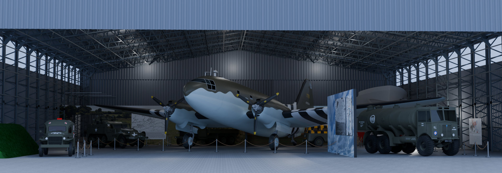
Tentoonstelling Nederlands Transport Museum
Omschrijving
Dit project werdt uitgevoerd in het kader van het vak Onderzoek en Ontwerp op de middelbare school. In dit vak krijgen leerlingen een opdracht waar ze een oplossing voor moeten vinden door middel van onderzoek. Voor het eindproject kregen wij onze opdracht van het Nederlands Transport Museum. Het museum is in het bezit van enkle transportvoertuigen uit de Tweede Wereldoorlog en is van plan deze collectie uit te bereiden. Daarom wou de opdrachtgever een samenhangende tentoonstelling waarin het verhaal van deze voertuigen verteld wordt. Door verschillende aspecten van de tentoonstelling te onderzoeken is een definitieve opstelling samengesteld. Om deze te presenteren is een digitaal model van de tentoonstelling gemaakt en een fysieke maquette. Foto's hiervan worden op deze pagina uitgelicht. Voor dit project werkte ik samen met Lex Wood en Jori Groenedijk.
Maquette
De digitale modellen die ook gebruikt zijn voor de animatie zijn tot leven gebracht met behulp van een 3D-printer en lasersnijder. De opstelling op schaal 1:72 bestaat grotendeels uit eigen ontwerpen, maar er zijn ook enkele modellen van anderen gebruikt. Alles is met de hand geschilderd.
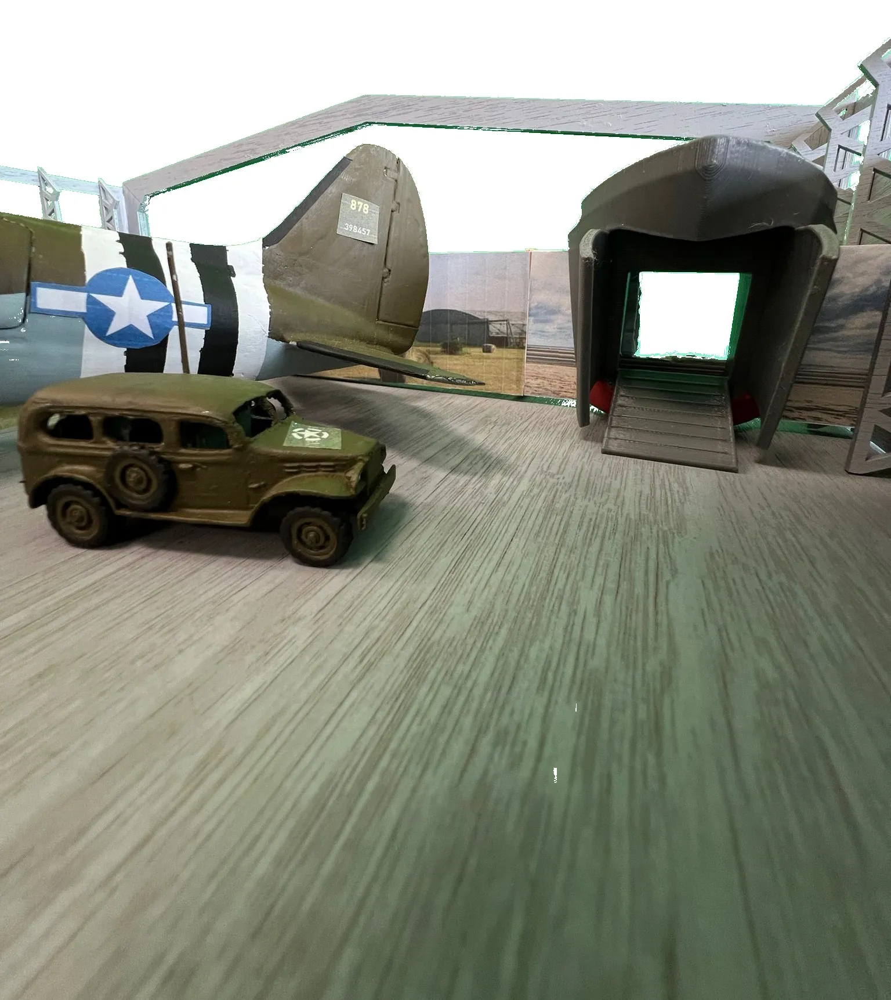
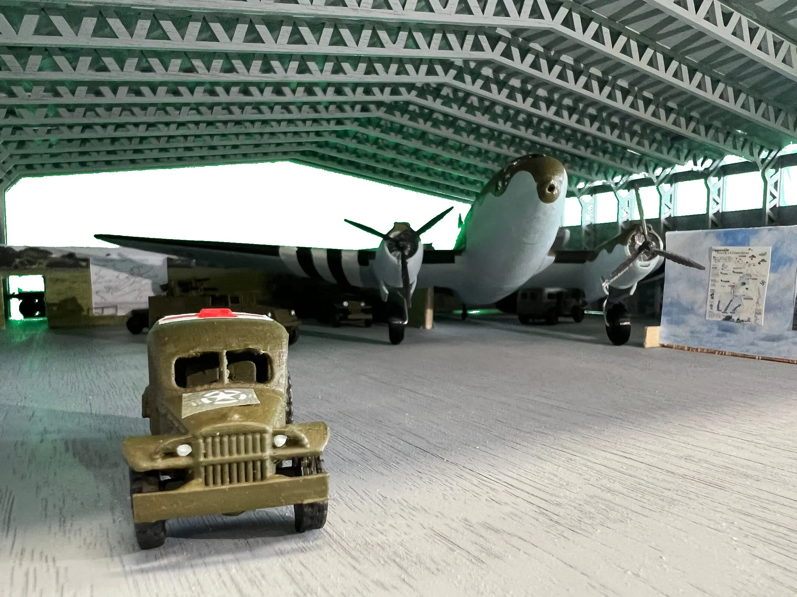
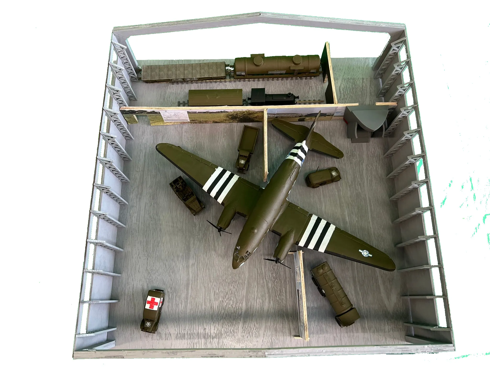
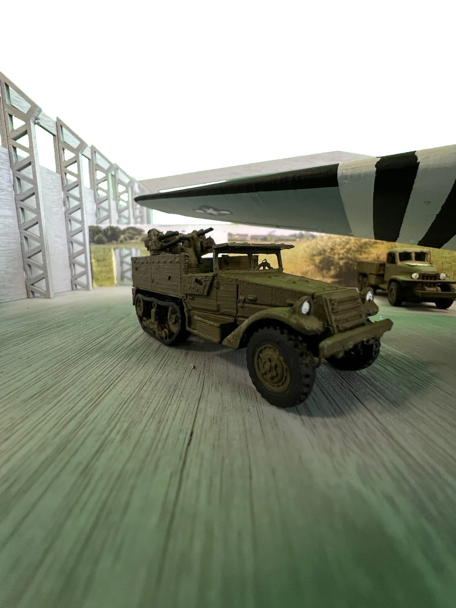
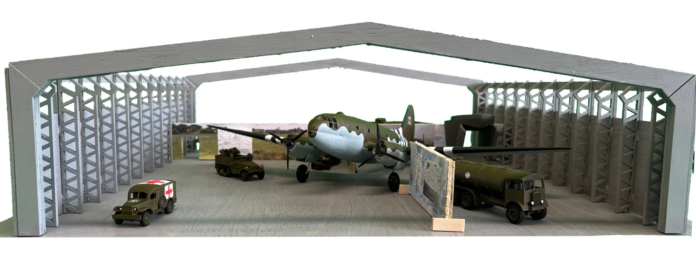
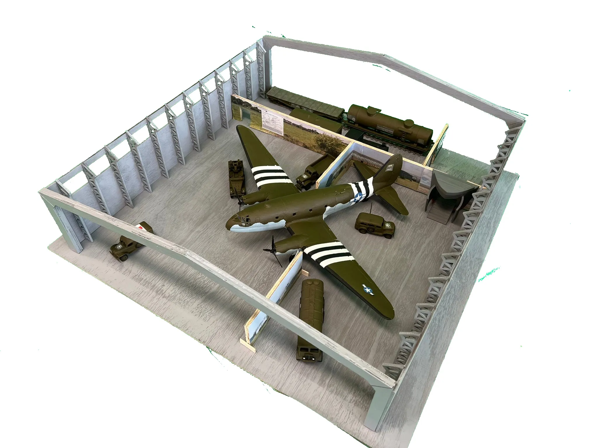
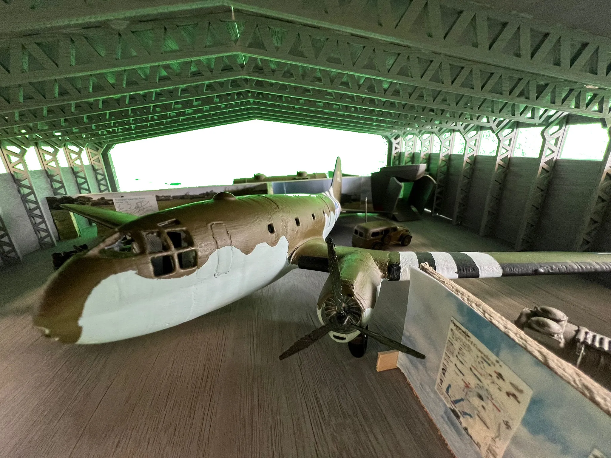
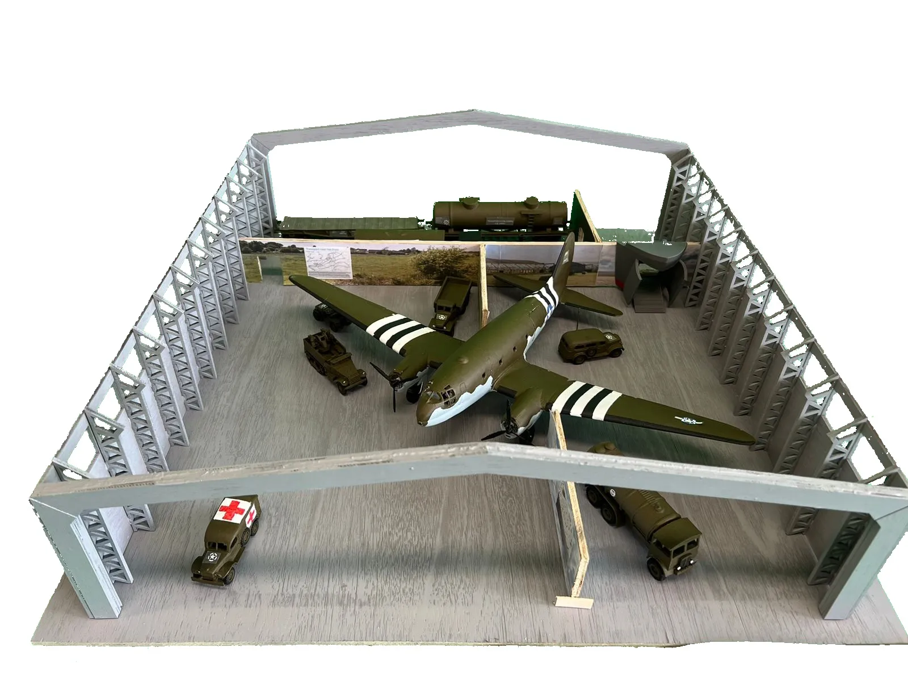
3D animatie
Om het concept voor de tentoonstelling duidelijk over te brengen is een animatie gemaakt waarbij de bezoekers worden meegenomen door de hele opstelling. Alle 3D-modellen zijn zelf gemaakt in de 3D-software Blender.
3D modellen
Het maken van de modellen heeft vele uren in beslag genomen. Er is een duidelijk verschil in kwaliteit te zien tussen eerste voertuigen die ik heb ontworpen en de laatste paar, omdat ik met elk model meer ervaring opdeed en steeds beter werd in Blender. Hieronder worden alle digitale modellen nog eens van dichtbij uitgelicht.

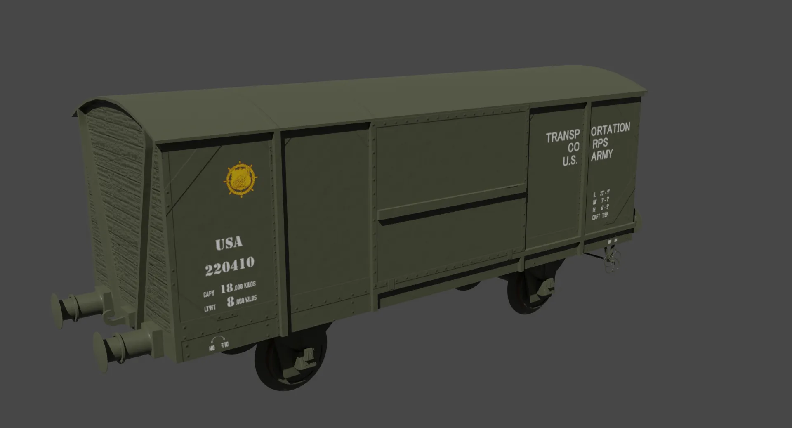


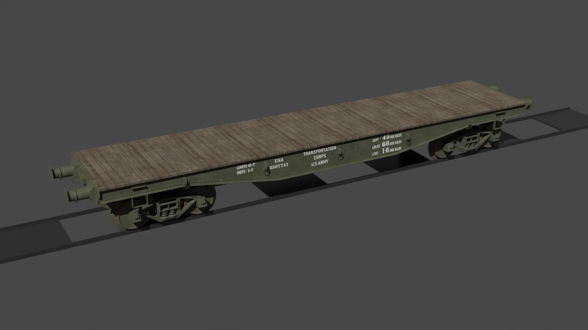
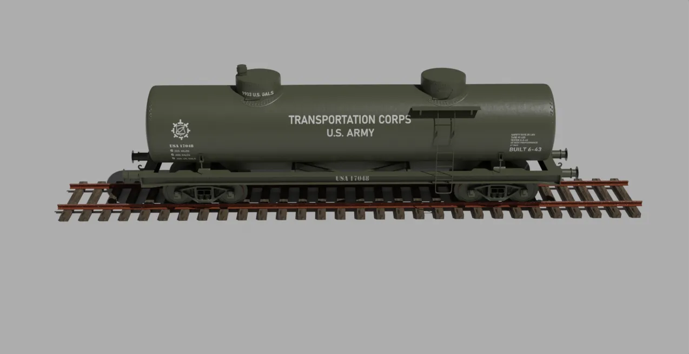

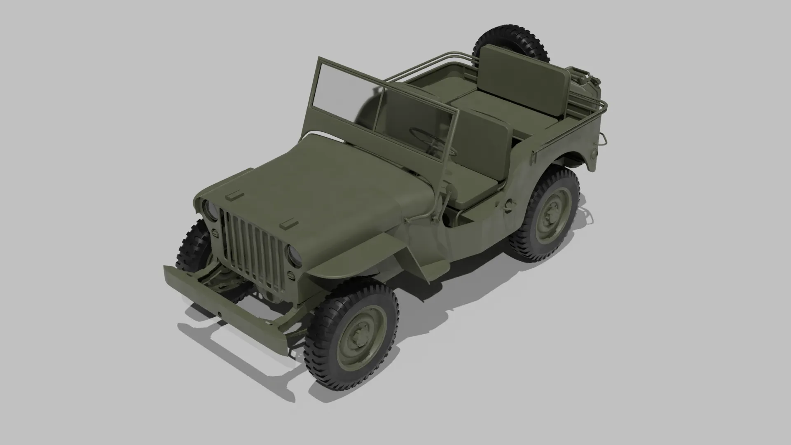